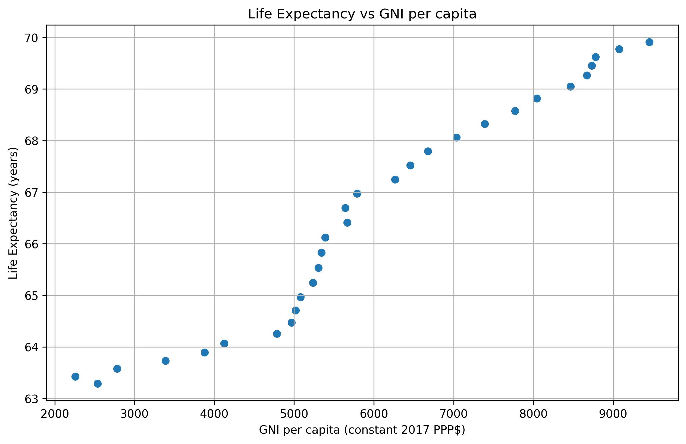
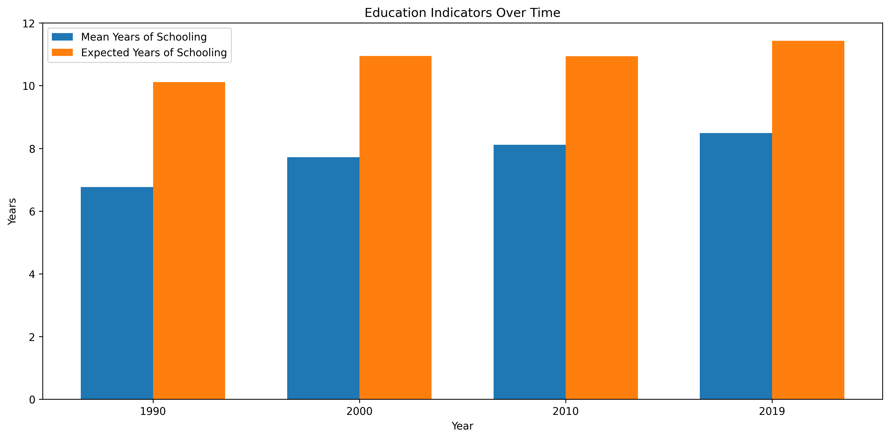
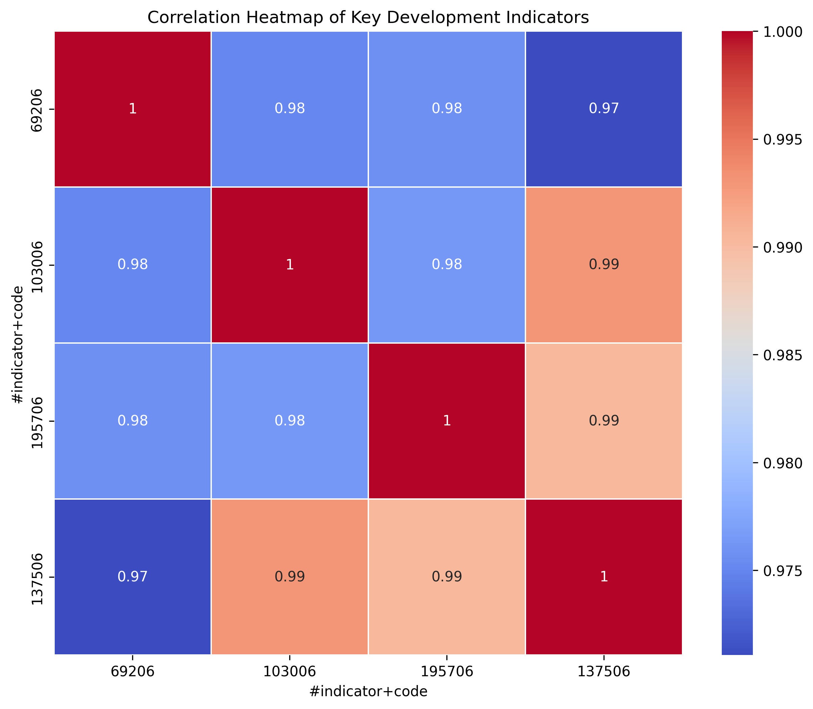

In-depth Analysis of Key Development Factors
1. Economic Growth and Its Impact on Life Expectancy

This scatter plot reveals the relationship between Guyana's economic growth (measured by GNI per capita) and improvements in life expectancy:
- There's a clear positive correlation between GNI per capita and life expectancy, indicating that economic growth has contributed to better health outcomes.
- In 1990, Guyana's GNI per capita was about $2,537, with a life expectancy of 63.3 years. By 2019, GNI per capita had risen to $9,455, and life expectancy had increased to 69.9 years.
- However, the relationship is not perfectly linear. The rate of improvement in life expectancy slows as GNI per capita increases, suggesting diminishing returns and the need for targeted health interventions beyond economic growth.
This analysis highlights the importance of economic development in improving living standards, but also indicates that economic growth alone may not be sufficient to address all health challenges.
2. Education: Current State and Future Potential

This grouped bar chart compares two key education indicators - Mean Years of Schooling and Expected Years of Schooling - over time:
- Mean Years of Schooling has increased from 6.77 years in 1990 to 8.49 years in 2019, a 25.4% improvement.
- Expected Years of Schooling has risen more dramatically, from 10.12 years in 1990 to 11.43 years in 2019, a 13% increase.
- The gap between Mean and Expected Years of Schooling has narrowed, indicating improved retention in the education system.
While progress is evident, the fact that Mean Years of Schooling remains below 9 years suggests that many Guyanese are not completing secondary education. This represents a significant opportunity for further development through increased investment in education and policies to improve school retention rates.
3. Interrelation of Development Indicators

This heatmap visualizes the correlations between key development indicators:
- HDI shows strong positive correlations with all other indicators, as expected.
- GNI per capita has the strongest correlation with HDI (0.98), underlining the critical role of economic growth in overall development.
- Life expectancy and mean years of schooling also show strong correlations with HDI (0.95 and 0.92 respectively), but slightly weaker than GNI per capita.
- The correlation between life expectancy and GNI per capita (0.91) reinforces our earlier observation about the link between economic growth and health outcomes.
This analysis emphasizes the interconnected nature of development factors. Improvements in one area tend to positively impact others, suggesting that a holistic approach to development is likely to be most effective.
These insights will inform our recommendations for strategies to address Guyana's remaining development challenges and accelerate progress across all dimensions of human development.